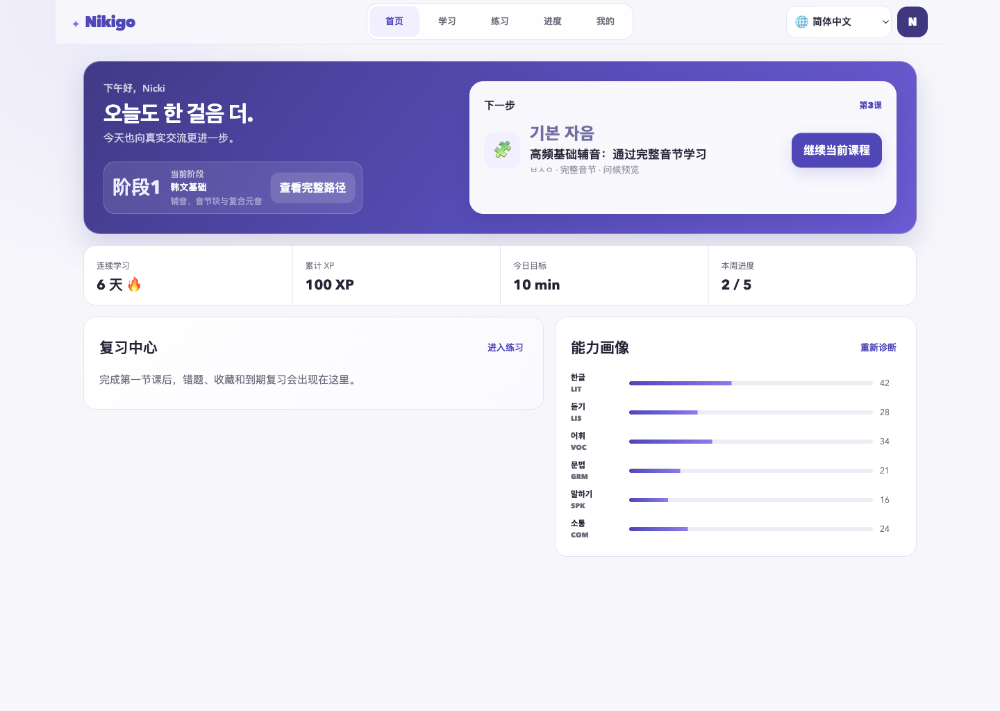
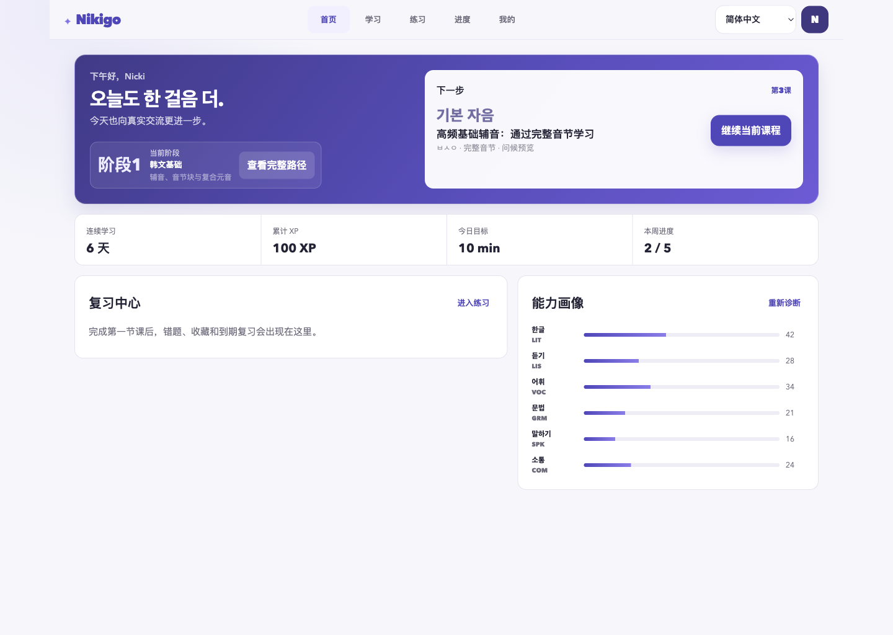
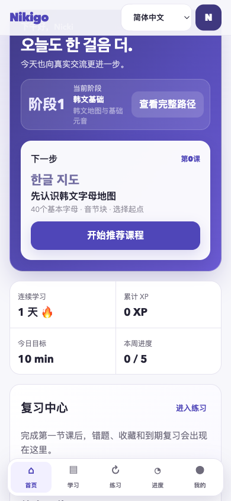
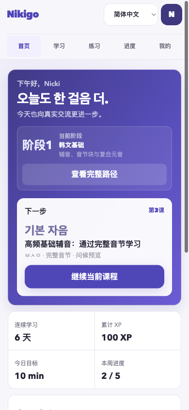

<!doctype html>
<html lang="zh-CN">
<meta charset="utf-8">
<meta name="viewport" content="width=device-width,initial-scale=1">
<title>Nikigo Dashboard baseline comparison</title>
<style>
  *{box-sizing:border-box}body{margin:0;background:#ecebf4;color:#242335;font:600 16px/1.45 -apple-system,BlinkMacSystemFont,"Segoe UI",sans-serif}main{max-width:1880px;margin:auto;padding:32px}.title{margin:0 0 24px;font-size:28px}.pair{display:grid;grid-template-columns:1fr 1fr;gap:24px;margin-bottom:32px}.panel{overflow:hidden;border:1px solid #d7d4e3;background:#fff}.panel h2{margin:0;padding:14px 18px;border-bottom:1px solid #e5e3ef;font-size:18px}.panel img{display:block;width:100%;height:auto}.mobile{max-width:900px;margin-inline:auto}@media(max-width:760px){main{padding:16px}.pair{grid-template-columns:1fr}.title{font-size:22px}}
</style>
<main>
  <h1 class="title">Nikigo Dashboard · 基线与静态优化对比</h1>
  <section class="pair">
    <article class="panel"><h2>修改前 · 1440×1024</h2></article>
    <article class="panel"><h2>修改后 · 1440×1024</h2></article>
  </section>
  <section class="pair mobile">
    <article class="panel"><h2>修改前 · 390×844</h2></article>
    <article class="panel"><h2>修改后 · 390×844</h2></article>
  </section>
</main>
</html>
